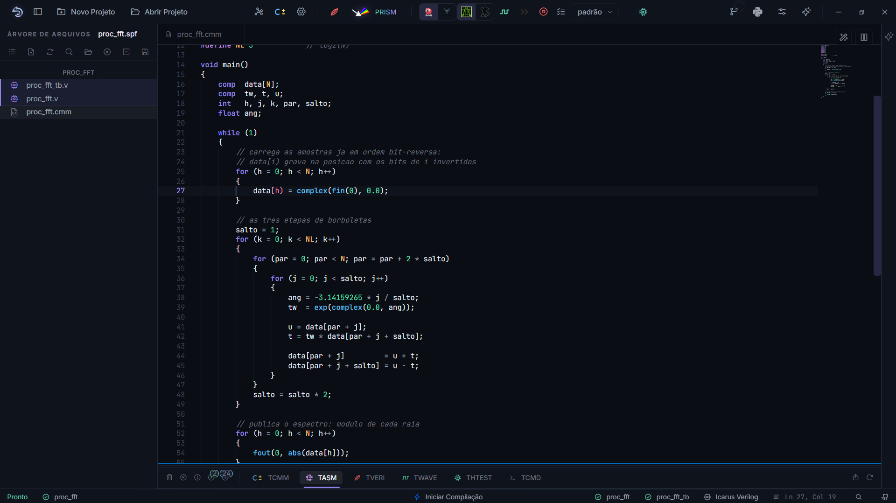

FFT em hardware¶
A FFT é o algoritmo que junta tudo o que a Parte V apresentou: números complexos, ponto flutuante dimensionado e um recurso que só o SAPHO tem na linguagem: o índice bit-reverso.
O problema do embaralhamento¶
A FFT radix-2 com decimação no tempo consome as amostras em ordem bit-reversa: para 8 pontos, a posição binária 001 vira 100, então x[1] é lido como x[4], e assim por diante. Em software comum, isso custa uma rotina de embaralhamento antes da transformada.
No SAPHO, o embaralhamento custa zero: a linguagem tem um modo de indexação que inverte os bits do índice no próprio hardware de endereçamento.
data[j] // acesso normal
data[j) // acesso com os bits de j invertidos
O parêntese no lugar do colchete final é a sintaxe. Quantos bits são invertidos é definido pela diretiva #FFTSIZ: para uma FFT de 8 pontos, #FFTSIZ 3.
O programa¶
Crie um processador proc_fft (32 bits, mantissa 23, expoente 8) e escreva a FFT de 8 pontos:
1#PRNAME proc_fft
2#NUBITS 32
3#NBMANT 23
4#NBEXPO 8
5#NDSTAC 8
6#SDEPTH 2
7#NUIOIN 1
8#NUIOOU 1
9#FFTSIZ 3
10
11#define N 8
12#define NL 3 // log2(N)
13
14void main()
15{
16 comp data[N];
17 comp tw, t, u;
18 int i, j, k, par, salto;
19 float ang;
20
21 while (1)
22 {
23 // carrega as amostras ja em ordem bit-reversa:
24 // data[i) grava na posicao com os bits de i invertidos
25 for (i = 0; i < N; i++)
26 {
27 data[i) = complex(fin(0), 0.0);
28 }
29
30 // as tres etapas de borboletas
31 salto = 1;
32 for (k = 0; k < NL; k++)
33 {
34 for (par = 0; par < N; par = par + 2 * salto)
35 {
36 for (j = 0; j < salto; j++)
37 {
38 ang = -3.14159265 * j / salto;
39 tw = exp(complex(0.0, ang));
40
41 u = data[par + j];
42 t = tw * data[par + j + salto];
43
44 data[par + j] = u + t;
45 data[par + j + salto] = u - t;
46 }
47 }
48 salto = salto * 2;
49 }
50
51 // publica o espectro: modulo de cada raia
52 for (i = 0; i < N; i++)
53 {
54 fout(0, abs(data[i]));
55 }
56 }
57}
Os pontos de atenção:
A linha 27 é o truque inteiro:
data[i)grava a amostraijá na posição embaralhada. Nenhuma rotina de reordenação, nenhum ciclo gasto.O twiddle
twsai deexpcomplexo, que o compilador implementa por rotina. Uma versão otimizada usaria uma tabela pré-calculada em arquivo (comp tw[4] "twiddles.txt"não existe paracomp; use dois vetoresfloatcom as partes real e imaginária), bom exercício para a turma.absde complexo devolve o módulo, direto para a saída.
{kind=link}

Verificando¶
Alimente input_0.txt com 8 amostras de uma senoide que caiba em um período da janela e simule. No espectro de saída, duas raias simétricas devem se destacar. Compare com o numpy.fft.fft das mesmas amostras: os módulos devem bater dentro do erro do formato de ponto flutuante escolhido, o que fecha o laço com o capítulo de ponto flutuante.
Para tamanhos maiores, ajuste N, NL e #FFTSIZ juntos, e acompanhe no TASM o crescimento do programa.
Ver também
O índice bit-reverso nasceu de um projeto de processador dedicado à FFT: Projeto de um Processador Embarcado Otimizado para Aplicação com Transformada de Fourier (2016).